기계정비산업기사 (2004-03-07 기출문제)
1과목: 공유압 및 자동화시스템
1. 산업용 로봇의 동작 형태에 따른 종류가 아닌 것은?
- 원통 좌표 로봇
- 다관절 로봇
- 직각 좌표 로봇
- 용접용 로봇
(정답률: 63%)

2. 자동화 시스템의 보수관리의 목적에 적합한 것은?
- 자동화시스템 보수관리는 복잡하고 귀찮아서 고장의 배제와 수리를 하지 않고 전체를 교환한다.
- 자동화시스템은 항상 최상의 상태로 유지해야 하나 교환 및 수리를 위해 예산이 수반되면 보수를 늦춘다.
- 자동화시스템을 항상 최상의 상태로 유지하고, 고장의 배제와 수리를 신속하고, 확실하게 한다.
- 자동화시스템을 항상 최상의 상태로 유지하나, 내용년수가 짧아지며 유지비가 많이 들면 보수하지 않는 다.
(정답률: 85%)
3. 내경 32mm의 실린더가 10mm/sec의 속도로 움직이려 할 때 필요한 최소 펌프 토출량은 몇 ℓ /min인가?
- 0.5
- 1
- 1.5
- 2
(정답률: 33%)
4. 공유압 기호요소중 에너지 변환기기를 나타내는 도형은?
- 정사각형
- 직사각형
- 대원
- 반원
(정답률: 58%)
5. 다음의 변위단계 선도가 나타내는 시스템 동작순서는? (+:실린더의 전진, -:실린더의 후진)
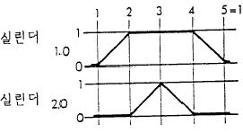
- 1.0+ 2.0+ 2.0- 1.0-
- 1.0- 2.0- 2.0+ 1.0+
- 2.0+ 1.0+ 1.0- 2.0-
- 2.0- 1.0- 1.0+ 2.0+
(정답률: 88%)
6. 다음과 같은 유압회로에 대한 설명 중 틀린 것은?
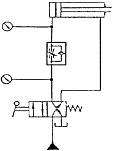
- 실린더의 전진 운동시 항상 일정한 힘을 유지 할 수 있는 회로이다.
- 실린더에 인장하중의 작용시 카운터 밸런스 회로를 필요로 한다.
- 전진 운동시 실린더에 작용하는 부하변동에 따라 속도가 달라진다.
- 시스템에 형성되는 모든 압력은 항상 설정된 최대압력이내 이다.
(정답률: 38%)
7. 자동화 생산 시스템에 있어 주요 하드웨어 설비에 속하지 않는 것은?
- 제조 설비
- 운반 설비
- 저장 설비
- A/S 설비
(정답률: 77%)
8. 유압 모터의 장점이 아닌 것은?
- 소형 경량으로 큰 힘을 낼 수 있다
- 작동유의 점도 변화에 영향을 받지 않아 사용 온도 범위가 넓다
- 속도나 방향제어가 용이하다
- 릴리프 밸브를 이용하여 기구 손상 없이 급속 정지가 가능하다
(정답률: 78%)
9. 설비의 신뢰성을 나타내는 데 필요한 조건이 아닌 것은?
- 사용 기간
- 의도된 용도
- 사용조건
- 모듈의 크기
(정답률: 72%)
10. 공압 장치에 사용되는 방향 제어 밸브의 종류가 아닌 것은?
- 체크 밸브
- 셔틀 밸브
- 니들 밸브
- 방향 전환 밸브
(정답률: 59%)
11. 초전재료 PZT에 유도되는 전기출력 값은? (단, 초전계수는 2.0× 10-8 π C/㎝2 K 이고, 면적은 0.8mm× 2.0mm, 온도는 1분당 0.5℃씩 상승, 저항은 100GΩ 이다.)
- 27V
- 2.7V
- 0.27V
- 0.027V
(정답률: 36%)
12. 다음 중 공기압 조정유닛의 구성요소가 아닌 것은?
- 필터(filter)
- 압력조절밸브(pressure regulating valve)
- 압력제한밸브(pressure limiting valve)
- 윤활기(lubricator)
(정답률: 54%)
13. 펌프 중 다른 펌프와 비교하여 비교적 높은 압력까지 형성할 수 있는 펌프는?
- 베인 펌프
- 내접기어 펌프
- 외접기어 펌프
- 피스톤 펌프
(정답률: 72%)
14. 유압기기에서 유압 펌프(hydraulic pump)의 특성은 어떠한 것이 좋은가?
- 토출량에 따라 속도가 변할 것
- 토출량에 따라 밀도가 클 것
- 토출량의 맥동이 적을 것
- 토출량의 변화가 클 것
(정답률: 54%)
15. n개의 입력선으로 코드화된 2진 정보를 최대 2n 개의 유일한 출력선으로 변환시켜주는 장치는?
- 가산기
- 비교기
- 인코더
- 디코더
(정답률: 33%)
16. 엑추에이터(actuator)가 작동하는 것을 확인하여 제어회로에 피드백(feed back)하는 회로는?
- 출력회로
- 입력회로
- 검출회로
- 제어회로
(정답률: 60%)
17. 유체의 흐름이 한 방향으로만 허용되는 밸브는?
- 니들 밸브
- 언로드 밸브
- 체크 밸브
- 유량 밸브
(정답률: 75%)
18. 그림의 변위단계 선도와 같은 동작을 약부호 표현으로 나타낸 것은? (단, + : 전진, - : 후진)
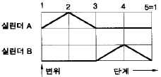
- A+ B+ B- A-
- A+ A- B- B+
- A+ B+ A- B-
- A+ A- B+ B-
(정답률: 73%)
19. 공압 단동 실린더의 종류가 아닌 것은?
- 피스톤형
- 벨로스형
- 다이어프램형
- 탠덤형
(정답률: 51%)
20. 광화이버 센서의 종류에서 광화이버의 형상에 따라 분류 하는 방식이 아닌 것은?
- 분할형
- 평행형
- 렌덤 확산형
- 투과형
(정답률: 35%)
2과목: 설비진단관리 및 기계정비
21. 소음방지 재료의 투과율은?
- 투과된 에너지 / 입사에너지
- 입사에너지 / 투과된 에너지
- 흡수된 에너지 / 투과된 에너지
- 투과된 에너지 / 흡수된 에너지
(정답률: 59%)
22. 설비의 열화 현상 중 돌발고장의 현상이 아닌 것은?
- 기계의 축 절단
- 전기회로의 단선
- 압축기 피스톤링의 마모
- 과부하로 인한 모터의 소손
(정답률: 58%)
23. 펌프에 관한 설명 중 올바른 것은?
- 다단 펌프는 유량을 증가시킨다.
- 양흡입 펌프는 양정을 증가시킨다.
- 양흡입 펌프는 축추력이 발생되지 않는다.
- 축방향으로 유체를 흡입하고 반경방향으로 토출시키는 펌프는 축류식 펌프이다.
(정답률: 38%)
24. 다음 설명중 올바르지 못한 것은?
- 평균고장 간격은 1/고장률 이다.
- 평균고장시간은 부품이 처음 사용되어 고장이 발생할 때까지의 평균시간이다.
- 고장강도율은 (고장정지시간/부하시간)x100 이다.
- 고장도수율은 (동작시간합계/정지회수합계) 이다..
(정답률: 51%)
25. 어떤 설비의 열화손실 곡선은 f(t)=40,000+80,000t 이고, 1회의 보전비가 640,000원 일 때 이 설비의 최적수리주기는 몇 개월인가?
- 8
- 4
- 32
- 64
(정답률: 36%)
26. 다음의 측정기 중에서 비교적 정밀한 축의 흔들림, 평행도, 중심내기 등에 사용되는 것은?
- 실린더 게이지
- 다이얼게이지
- 투영기
- 나사 마이크로미터
(정답률: 75%)
27. 실린더 내의 분산가스가 누설되지 않거나 물, 먼지의 침입을 막아주는 윤활작용의 형태는?
- 밀봉작용
- 방청작용
- 감마작용
- 응력분산작용
(정답률: 65%)
28. 일정한 재고량을 정해놓고 사용한 만큼을 발주시키는 예비품 발주방식은?
- 정량발주방식
- 정기발주방식
- 사용고발주방식
- 2궤법방식
(정답률: 61%)
29. 블록게이지 00급의 용도는?
- 측정기구류의 정밀도 점검
- 검사용 게이지류의 정밀도 검사
- 공작용 게이지류의 정밀도 검사
- 표준용 블록게이지의 정밀도 검사
(정답률: 46%)
30. 진동제어를 위한 댐핑 재료에 대한 내용으로 옳지 않은 것은?
- 구조물에 완전히 부착해야한다.
- 점성탄성인 재료는 사용하지 않는다.
- 열을 잘 발산해야 한다.
- 구조물이 진동할 때 현저한 변형을 받을 수 있는 곳에 설치한다.
(정답률: 39%)
31. 설비진단 기술의 필요성 중 연결이 잘못된 것은?
- 설비 측면→ 데이타에 의한 신뢰성
- 조업 측면→ Claim 방지
- 정비계획 측면→ 고장의 미연방지
- 설비관리 측면→ 정수적
(정답률: 52%)
32. 소음 투과율의 정의로 알맞은 것은?
- 투과된 에너지 / 입사에너지
- 10 log(입사에너지 / 투과된 에너지)
- 입사에너지 / 투과된 에너지
- 10 log(투과된 에너지 / 입사에너지)
(정답률: 45%)
33. 신뢰성과 보전성을 함께 고려한 광의의 신뢰성의 척도로서 어느 특정 순간에 기능을 유지하고 있는 확률은?
- 보전성
- 유용성
- 생산성
- 신뢰성
(정답률: 57%)
34. 볼트너트의 이완 방지 방법이 아닌 것은?
- 홈달림 너트 분할핀 고정에 의한 방법
- 절삭너트에 의한 방법
- 로크너트에 의한 방법
- 볼트를 잘라 넓히는 방법
(정답률: 63%)
35. 어느 송풍기가 900rpm으로 운전될 때에 풍량 14m3/min 를 낸다. 이 송풍기를 1400rpm으로 운전한다면 풍량은 몇 m3/min 인가?
- 19.8
- 21.8
- 35.2
- 42.2
(정답률: 58%)
36. 베어링의 열박음 장착시 베어링 재료의 경도가 저하되는 가열한계 온도는 몇 도(° )인가?
- 30
- 60
- 90
- 130
(정답률: 70%)
37. 송풍기를 설치하기 전 기초 작업으로 확인되어야 할 사항이 아닌 것은?
- 기초 치수
- 기초 볼트위치
- 조립 외형도에 의한 부품배치
- 베어링 조정
(정답률: 62%)
38. 대용량 압축기의 흡입배관에 설치되는 스트레이너의 용도는?
- 빗물이 압축기내에 흡입되는 것을 방지한다.
- 고운 입자의 먼지가 압축기내에 흡입되는 것을 방지한다.
- 흡입 배관내에 녹이 발생하는 것을 방지한다.
- 종이, 나뭇잎 등의 이물질이 압축기내에 흡입되는 것을 방지한다.
(정답률: 71%)
39. 축의 손상이나 파손되는 형태의 여러가지 요소 중에서 가장 많이 발생하는 고장 원인은?
- 자연 열화
- 조립, 정비불량
- 설계불량
- 불가항력
(정답률: 79%)
40. 1kHz이상의 고주파를 발생시키는 것은?
- 언밸런스에 의한 진동
- 미스 얼라인먼트에 의한 진동
- 오일휩에 의한 진동
- 구름베어링의 흠에 의한 진동
(정답률: 32%)
3과목: 공업계측 및 전기전자제어
41. PN접합 다이오드의 순방향 바이어스 전압의 설명 중 잘못된 것은?
- 전위장벽이 높아진다
- 공핍층이 좁아진다
- P형 쪽에 (+)단자를 접속한다
- 정공이나 전자는 접합면을 빠져나가 이동한다
(정답률: 37%)
42. 면적식 유량계의 설치요령 설명 중 틀린 것은?
- 수직으로 설치한다.
- 하류측에는 역지밸브를 설치한다.
- 가로,세로 응력이 걸리지 않도록 한다.
- 유체의 유입방향은 상부에서 하부방향으로 한다.
(정답률: 57%)
43. 회전하고 있는 전동기를 역회전 되도록 접속을 변경하면 급정지한다. 압연기의 급정지용으로 이용되는 제동방식은?
- 플러깅제동
- 회생제동
- 다이나믹제동
- 와류제동
(정답률: 51%)
44. 다음 중 전류계의 측정 범위를 확대하기 위하여 쓰이는 저항을 무엇이라 하는가?
- 분류기
- 변압기
- 배율기
- 변성기
(정답률: 38%)
45. 균일한 평등 자장에 임의의 각을 이루며 진입한 전자는 어떤 운동을 하는가?
- 직선운동
- 나선운동
- 타원운동
- 포물선운동
(정답률: 41%)
46. 그림에 표시된 회로의 설명으로 잘못된 것은?
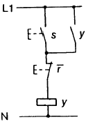
- 셋 우선 회로이다.
- 래칭(latching)회로 라고도 한다.
- 메모리회로 일종이다.
- 논리식은
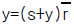
이다.
(정답률: 36%)
47. 함수f(t)의 라플라스 변환은 어떤 식으로 정의 되는가?
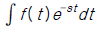
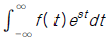
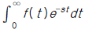
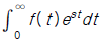
(정답률: 52%)
48. 다음 중에서 점도의 단위는?
- A/V
- N/m2
- P(poise)
- V/m
(정답률: 55%)
49. 변압기는 어떤 원리를 이용하는가?
- 옴의 법칙
- 공진 현상
- 전자유도작용
- 주울의 법칙
(정답률: 46%)
50. 다음의 검출기 중 온도의 검출에 적합한 것은?
- 포토 다이오드
- 서어미스터
- 바리스터
- 차동변압기
(정답률: 76%)
51. "차동 증폭기는 보통 연산증폭기(op-amp)의 ( )으로 사용된다." ( )안에 알맞는 것은?
- 입력단
- 출력단
- 접지단
- 전원단
(정답률: 41%)
52. 적분 요소의 전달함수는?
- TS
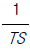
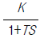
- K
(정답률: 62%)
53. 다음 중에서 면적식 유량계의 특징에 해당되는 것은?
- 점도가 높은 액체나 점도 변화가 큰 액체의 측정에 적당하다.
- 패러데이의 전자 유도 법칙을 이용한다.
- 기체, 액체 어느 것도 측정할 수 있고 압력 손실이 적으며 부식성 유체도 측정 가능하다.
- 0점이 안정하다.
(정답률: 36%)
54. 측정량을 기준량에 평형시켜 계측기의 지시가 0 위치에 나타날 때 기준량의 크기로 측정량을 구하는 방식은?
- 영위법
- 편위법
- 치환법
- 보상법
(정답률: 62%)
55. 전기기기의 분류에서 회전기에 속하는 것은?
- 정류기
- 직류변환기
- 유도기
- 인버터
(정답률: 21%)
56. 여러 개의 데이터 입력 중에서 한 번에 1개 입력 데이터만 출력단에 나타나는 조합 논리회로는?
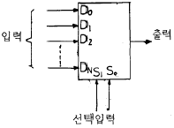
- 인코더
- 멀티 플렉서
- 디멀티 플렉서
- 코드 변환기
(정답률: 47%)
57. 직류 전동기에서 정류자와 접촉해서 전기자 권선과 외부 회로를 연결하여 주는 것은?
- 계자
- 전기자
- 브러시
- 계자철심
(정답률: 62%)
58. 8421 코드에서 각 비트를 D, C, B, A라고 할 때 10진수 5를 나타낸 것은? (단, D=MSB, A=LSB이다.)
- A=1, B=0, C=1, D=0
- A=1, B=1, C=0, D=0
- A=0, B=0, C=1, D=1
- A=0, B=1, C=0, D=1
(정답률: 43%)
59. 다음 중 열전대 조합으로 많이 사용하지 않는 것은?
- 백금로듐 - 백금
- 크로멜 - 알루멜
- 철 - 콘스탄탄
- 구리 - 알루멜
(정답률: 59%)
60. 다음 중 응답속도가 빠르고 안정도가 가장 좋은 동작은?
- 온 오프동작
- 비례 미분동작
- 비례 적분동작
- 비례 적분 미분동작
(정답률: 34%)
4과목: 기계정비 일반
61. 다음 중 절삭성이 우수하고 가벼우며, Al합금용, 구상흑연주철 첨가제 및 사진용 프래시 등의 용도로 사용되는 것은?
- Mg
- Ni
- Zn
- Sn
(정답률: 40%)
62. 길이에 비하여 지름이 아주 작은 롤러 지름이 2∼5 mm로 보통 리테이너가 없는 베어링은?
- 원통 롤러 베어링
- 구면 롤러 베어링
- 니들 롤러 베어링
- 플렉시블 롤러 베어링
(정답률: 53%)
63. 순철은 1539℃에서 응고하여 상온까지 냉각하는 동안 A4 ,A3,A2의 변태를 한다. A2변태 설명이 아닌 것은?
- 큐리점
- 자기 변태점
- 동소 변태점
- 자성만의 변화를 가져오는 변태
(정답률: 33%)
64. 탄소강 중에서 펄라이트(pearlite)에 대한 설명 중 옳은 것은?
- 탄소가 6.68% 되는 철의 탄소화물인 시멘타이트로서 금속간 화합물이다.
- 0.86%의 γ고용체가 723℃에서 분열하여 생긴 페라이트와 시멘타이트의 공석조직이다.
- 1.7%C의 γ고용체와 6.68%C의 시멘타이트의 공정조직이다.
- 1.7%까지 탄소가 고용된 고용체이며, 오스테나이트라고도 한다.
(정답률: 38%)
65. Do = m(Z + 2)의 공식은 기어의 무엇을 구하기 위한 것인가? (단, m = 모듈, Z = 잇수이다.)
- 바깥지름
- 피치원지름
- 원주피치
- 중심거리
(정답률: 35%)
66. 다음 중 미터 나사의 설명에 맞는 것은?
- 나사산 각이 55° 이다.
- 나사의 크기는 유효지름으로 표시한다.
- 나사의 지름과 피치를 ㎜로 표시한다.
- 미국, 영국, 캐나다 3국에 의하여 정해진 규격이다.
(정답률: 46%)
67. 보통운전으로 회전수 300rpm, 베어링하중 110㎏f를 받는 단열레디얼 볼 베어링의 기본부하용량은 얼마가 되는가? (단, 수명은 6만 시간이고, 하중계수는 1.5이다.)
- 1693㎏f
- 165.0㎏f
- 1650㎏f
- 169.3㎏f
(정답률: 28%)
68. 다음 축의 종류 중 작용 하중에 의한 분류에 속하는 스핀들(spindle)에 대한 설명으로 가장 올바른 것은?
- 주로 휨 하중을 받는 긴 회전축이다.
- 주로 비틀림하중을 받으며 길이가 짧고 치수가 정밀한 회전축이다.
- 철도 차량의 차축과 같이 그 자체가 회전하는 회전축을 말한다.
- 휨과 비틀림 하중을 동시에 받는 회전축으로 주로 동력 전달에 사용된다.
(정답률: 35%)
69. 초소성을 얻기 위한 조직의 조건이 아닌 것은?
- 극히 미세 입자이어야 한다.
- 결정립의 모양은 등축 이어야 한다.
- 모상입계는 큰 경사각인 것이 좋다.
- 모상입계가 인장 분리되기 쉬워야 한다.
(정답률: 29%)
70. 처음에 주어진 특정 모양의 제품을 인장하거나 소성 변형된 제품이 가열에 의하여 원래의 모양으로 돌아가는 현상은?
- 신소재 효과
- 형상기억 효과
- 초탄성 효과
- 초소성 효과
(정답률: 71%)
71. 다음 중 표면처리에 속하지 않는 열처리는?
- 연질화
- 고주파 담금
- 가스침탄
- 심랭처리
(정답률: 34%)
72. 스프링 상수 6㎏f/㎝인 코일 스프링에 30㎏f의 하중을 걸면 처짐은 얼마가 되는가?
- 60㎜
- 50㎜
- 40㎜
- 30㎜
(정답률: 51%)
73. 맞대기 용접이음에서 하중을 W, 용접부의 길이를 ℓ , 판두께를 t라 할 때 용접부의 인장응력을 계산하는 식은?
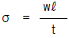
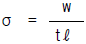
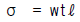
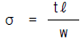
(정답률: 40%)
74. 유체의 평균속도가 10 cm/s이고 유량이 150 cm3/s일 때 관의 안지름은?
- 약 44 mm
- 약 48 mm
- 약 52 mm
- 약 38 mm
(정답률: 28%)
75. 12 ㎧의 속도로 전달마력 48 PS를 전달하는 평벨트의 이완측 장력으로 옳은 것은? (단, 긴장측의 장력은 이완측 장력의 3배이고, 원심력은 무시한다.)
- 100㎏f
- 150㎏f
- 200㎏f
- 250㎏f
(정답률: 35%)
76. 알루미늄이 공업재료로 사용되는 특성이 아닌 것은?
- 무게가 가볍다.
- 열전도도가 우수하다.
- 강도가 작다.
- 소성가공성이 우수하다.
(정답률: 55%)
77. 9600 ㎏fㆍcm 토크를 전달하는 지름 50 ㎜인 축에 적합한 묻힘 키이(12 mm x 8 mm)의 길이는? (단, 키이의 전단강도만으로 계산하고, 키이의 허용전단 응력 τ= 800 ㎏f/㎝2이다.)
- 40 ㎜
- 50 ㎜
- 5.0 ㎜
- 4.0 ㎜
(정답률: 24%)
78. 브리넬 경도 시험기에서 강철볼(steel ball)의 지름이 2mm, 하중이 471kgf이고 시편에 압입한 강철볼의 깊이가 0.5mm일 때 브리넬 경도 HB는?
- 75
- 150
- 37.5
- 300
(정답률: 30%)
79. 순철(α 철)의 격자구조는?
- 면심입방격자
- 면심정방격자
- 체심입방격자
- 조밀육방격자
(정답률: 31%)
80. 탄소가 0.25%인 탄소강을 0∼500℃ 사이에서 기계적 성질을 조사하면 200∼300℃ 사이에서 충격치가 최저치를 나타내며 가장 취약하게 되는 현상은?
- 고온 취성
- 상온 충격치
- 청열 취성
- 탄소강 충격값
(정답률: 54%)